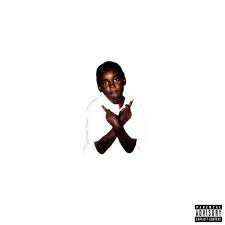

Brève Description
Kennyata Lee Frazier Jr., connu sous le nom de Ken Carson est un rappeur, auteur-compositeur et producteur de disques américain. Il est connu pour son album studio A Great Chaos qui a débuté au numéro 11 au numéro du Billboard 200.
Production finale d'intégration |
Kennyata Lee Frazier Jr., connu sous le nom de Ken Carson est un rappeur, auteur-compositeur et producteur de disques américain. Il est connu pour son album studio A Great Chaos qui a débuté au numéro 11 au numéro du Billboard 200.
| Album | Photo de l'album | Informations |
|---|---|---|
| Project X |  |
|
| X |  |
|
| A Great Chaos |  |
|